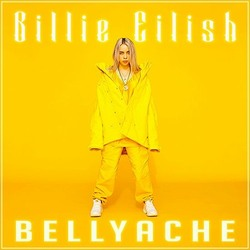

2021–sekarang: Happier Than Ever dan Guitar Songs
"Lo Vas a Olvidar", single yang menampilkan Rosalía sebagai bagian dari soundtrack Euphoria' HBO, dirilis pada bulan Januari 2021, hampir dua tahun setelah pada awalnya menggoda lagu tersebut. R. J. Cutler–film dokumenter yang disutradarai Billie Eilish: The World's a Little Blurry dirilis di Apple TV+ dan di bioskop tertentu. Film ini dipuji oleh para kritikus dan penggemar karena pandangan mendalam tentang kehidupan pribadi Eilish selama ketenarannya. Di 63rd Annual Grammy Awards, Eilish membawa pulang dua penghargaan: Grammy Award for Best Song Written for Visual Media, untuk Tema Bondnya dan Grammy Award for Record of the Year untuk singelnya dari tahun 2019, "Everything I Wanted". Dalam pidato penerimaannya untuk Record of the Year, Eilish mengatakan bahwa Megan Thee Stallion "pantas menang", namun dia tetap berterima kasih kepada penggemarnya dan saudara laki-lakinya, yaitu Finneas, atas penghargaannya.
Pada tanggal 27 April 2021, Eilish mengumumkan di akun Instagram miliknya bahwa album keduanya, Happier Than Ever, akan dirilis pada tanggal 30 Juli, dan daftar lagunya tersedia di Apple Music. Album ini dirilis dalam berbagai format, termasuk warna vinil dan kaset yang dapat dikoleksi. Perilisan album ini didahului oleh lima single: "My Future", "Therefore I Am", "Your Power", "Lost Cause", dan "NDA", dan diiringi oleh judul lagu. Pada tanggal 2 Desember 2021, Eilish mengumumkan versi vinil edisi terbatas ramah lingkungan dari Happier Than Ever yang terbuat dari potongan vinil daur ulang. Barang koleksi tersebut hanya tersedia di sejumlah toko Gucci di seluruh dunia dan termasuk stiker kuku bermerek Gucci yang dirancang oleh direktur kreatif merek tersebut, yaitu Alessandro Michele. Untuk lebih mempromosikan albumnya, Eilish bekerja dengan Disney+ untuk film konser Happier Than Ever: A Love Letter to Los Angeles, yang dirilis pada bulan September 2021, dan memulai Happier Than Ever, The World Tour, yang dimulai pada bulan Februari 2022 dan berakhir pada bulan April 2023.
Pada bulan Juni 2021, Eilish dikritik secara online karena videonya yang melontarkan cercaan anti-Asia "chink" sambil menyinkronkan bibir lagu "Fish" oleh Tyler, the Creator, sementara Matthew Tyler Vorce, pacarnya yang dilaporkan pada saat itu, menerima kritik atas dugaan postingan media sosial di mana dia menggunakan bahasa yang menyinggung dan menghina kaum gay dan kulit hitam Eilish juga dituduh queerbaiting setelah menggunakan teks "I love girls" untuk mempromosikan video musik "Lost Cause".Pada tanggal 22 Juni, dia memposting permintaan maaf ke Instagram Stories atas penggunaan "celah", dan mengatakan bahwa dia "terkejut dan malu" dengan video tersebut, dan bahwa dia berusia "13 atau 14" pada saat itu, dan tidak mengetahui cercaan tersebut adalah istilah yang merendahkan. Dia juga membahas video terpisah tentang apa yang dianggapnya mengejek aksen Asia, menulis bahwa dia sebenarnya "berbicara dengan suara yang dibuat-buat dan tidak masuk akal". Merenungkan kejadian tersebut dalam wawancara pada bulan Juli 2021, Eilish menyatakan: "Saya mengatakan begitu banyak hal yang saat itu saya tidak setuju sama sekali, atau memikirkan hal sebaliknya. Hal yang paling aneh adalah bagaimana tidak ada yang hilang setelah tersebar di internet ... Ketika Anda masih remaja, Anda tidak benar-benar mengenal diri sendiri ... Saya tidak benar-benar tahu bagaimana perasaan saya yang sebenarnya. Jadi saya hanya muncul dengan fasad yang saya pertahankan."
Eilish mulai merumuskan ide untuk lagu album studio ketiganya bersama dengan Finneas pada bulan Desember 2021. Dalam sebuah wawancara pada bulan Juli 2022 dengan Zane Lowe untuk Apple Music, dia berkomentar bahwa dia berharap untuk mulai menulis album pada tahun 2023. Pada tahun 2022, Eilish memenangkan Academy Award for Best Original Song untuk lagu "No Time to Die" dari film dengan nama yang sama, menjadi orang pertama yang lahir di abad ke-21 yang memenangkan Academy Award. Pada tahun yang sama, ia menjadi penampil termuda hingga saat ini untuk dua festival, khususnya Glastonbury dan Coachella. Film Pixar Turning Red dirilis pada tahun itu, di mana dia dan Finneas menulis tiga lagu. Ini adalah "Nobody Like U", "U Know What's Up", dan "1 True Love", yang dibawakan oleh boy band fiksi Turning Red 4*Town.
Pada bulan Juni 2022, selama pertunjukan tur dunianya di Manchester, Eilish memulai debutnya dengan lagu balada "TV" yang belum pernah dirilis. Lagu tersebut merujuk pada penggulingan dari Roe v. Wade, sebuah kasus yang menjadikan aborsi sebagai hak konstitusional di AS. Pada bulan berikutnya, pada tanggal 21 Juli, dia secara mengejutkan merilis EP dua lagu Guitar Song, yang menyertakan "TV" bersama dengan "The 30th". Eilish menjelaskan keputusannya untuk merilis EP secara mengejutkan selama sebuah sesi wawancara dengan Lowe. Dia mengatakan kepadanya bahwa sementara pengerjaan album studio ketiganya akan segera dilakukan, dia menolak menunggu sampai saat itu untuk memasukkan "TV" dan "The 30th" ke dalam daftar lagu. Dia ingin menyebarkan pesan mereka kepada para penggemarnya sesegera mungkin, dengan memperhatikan kesegeraan liriknya: "Lagu-lagu ini benar-benar kekinian bagi saya, dan itu adalah lagu yang ingin saya sampaikan sekarang." Alasan lainnya adalah Eilish sudah merasa bosan melakukan promosi tradisional yang berat untuk musik yang akan datang. Dia ingin merilis lagu-lagu seperti yang dia lakukan di awal karirnya, mempratinjaunya untuk para penggemar di konser langsung, sebelum merilisnya tanpa banyak pemasaran.
Eilish bekerja dengan Apple Music untuk secara eksklusif membawakan film dari salah satu konser tur Happier Than Ever, khususnya salah satu pertunjukannya di O2 Arena di London. Dia menyebut film tersebut sebagai cara bagi para penggemar yang kehilangan tiket untuk merasakan sendiri tur tersebut, ingin lebih banyak orang mengenalinya atas kecakapan memainkan pertunjukannya secara langsung. Tiga konser bertajuk Happier Than Ever, The Hometown Encore, diadakan di Kia Forum di Inglewood, California dari tanggal 13 hingga 16 Desember 2022, sebagai bagian dari tur tersebut.
Eilish memulai debut aktingnya di serial TV Amazon Prime Video, yaitu Swarm. Dia memainkan peran Eva, seorang pemimpin sekte yang terinspirasi oleh NXIVM, dan menerima ulasan yang positif untuk karakter yang dimainkan olehnya.